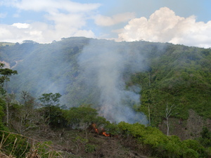

ebel 
/ʔɔbɔl/
n.
“smoke”
n.
smoke
Wrd.Gloss: smoke
Eng. smoke
Tag. asó; úsok
Ceb. aso
Ilo.: asók
Tigwanon: ʔebel
Binukid: ʔebel
Sarangani: ʔebel
Cotabato Manobo: ʔebel
Tasaday: ʔebel
WBM: ʔevel
Ilianen: ʔevel
Dibabawon: ʔebee
Kinamigin: ʔabul
Tagbawa: abell
Obo: ʔabbe
Proto: ʔebel
OCM: Fire (372)
Online dict status: -
Usage level: B
v.
for wood or fire (eg-ebel, mig-ebel/in-ebel, ebel, actor & theme, eg><ø-) to be smoky
Kenè kew tetemeg te makames ne kayu su eg-ebel.
Don't light a fire with a wet firewood for it will be smoky.
Eng. smoky, be; smoke, produce
Online dict status: -
Usage level: M
adj.
(meebel, mA1-) smoky
Eng. smoky
Online dict status: -
Usage level: M
v.
for wood (egmeebel, egmA1-) to be sooty
Egmeebel ka hapuy ke makames ka ig-undul ne kayu.
It will be sooty if the firewoods are wet.
Data Qual: check this - sooty or smoky?
Eng. sooty
OCM: Personal Hygiene (515)
Online dict status: -
Usage level: R
adj.
(ebelen, -en) smoky
Ebelen ka baley ney su egkaayunan te kalamag.
Our house (the dirty kitchen) is smoky for the wind goes directly to it.
Eng. smoky
Online dict status: -
Usage level: M
Updated by: RJH,AAA,TME,AAA,QDL,NJK,RAA
Last updated: 27/Oct/2009
"ebel" in text "Morning Darkness"
This page last updated: 19/May/2012
Copyright © 2009-2010, Matigsalug Language Christian Association, Inc